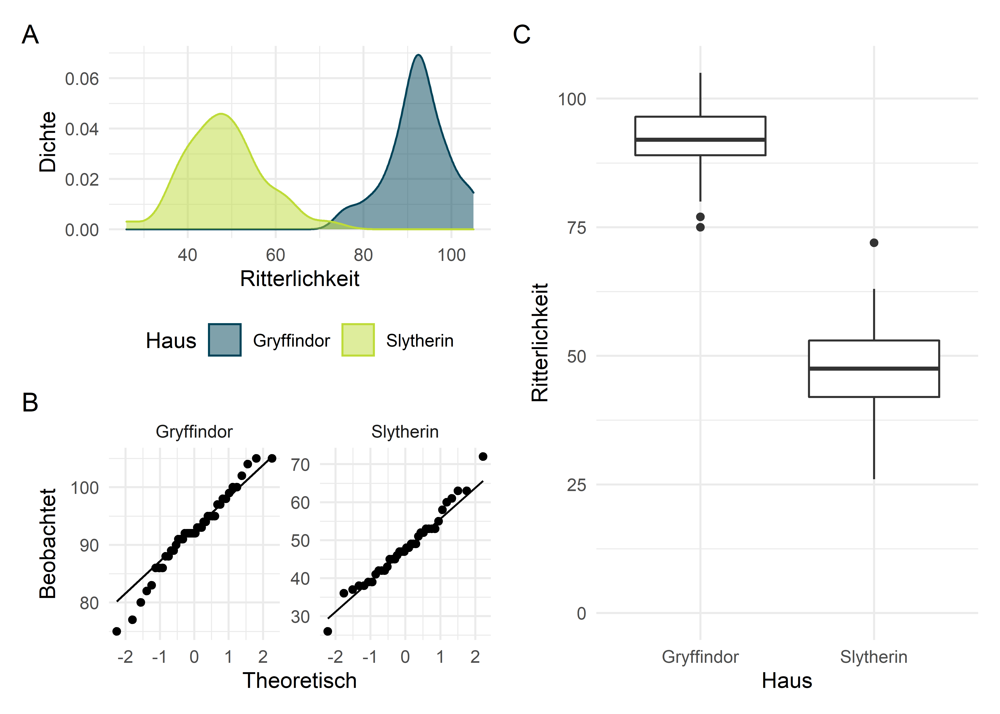
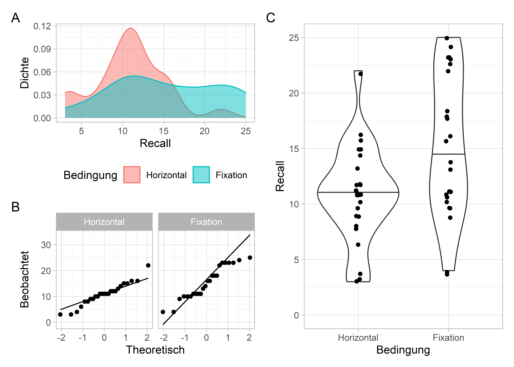

Begeben wir uns in die Welt der Magie, Muggel und Zauberstäbe; tauchen wir ein in die Welt von Harry Potter (Rowling, 1997). Auch in Hogwarts gibt es viel zu entdecken und statistisch zu entschlüsseln. Vielleicht kennst Du die vier Häuser von Hogwarts: Gryffindor, Hufflepuff, Ravenclaw und Slytherin. Jedem dieser Häuser werden verschiedene Eigenschaften nachgesagt, und jeder Schüler wird ausgehend von seinen Eigenschaften durch den sprechenden Hut einem der Häuser zugeteilt. Genau diese Eigenschaften der Schüler in den Häusern können wir uns nun einmal anschauen.
Alle Berechnungen und Abbildungen können wir mit unseren Standardpaketen durchführen. Wir benötigen das tidyverse zum Data Wrangling und zur Visualisierung der Daten. haven benötigen wir für den Import von SPSS-Dateien, rstatix für statistische Analysen und skimr für schnelle deskriptive Statistiken.
library(tidyverse)
library(haven)
library(rstatix)
library(skimr)Es wird spannend, denn wir betrachten die Rivalität der Häuser Griffyndor und Slytherin. Dem Haus Griffyndor werden Tapferkeit, Kühnheit und Ritterlichkeit zugeschrieben – dem Haus Slytherin, naja, eher nicht. Im Datensatz chivalry.sav sind die Ergebnisse eines Persönlichkeitstests zu finden, den alle in Hogwarts eingeschriebenen Bewohner dieser zwei Häuser durchführten, und der das Konstrukt “Ritterlichkeit” erfasst. Der Gesamtwert dieses Tests kann Werte zwischen 0 (keine Richtterlichkeit vorhanden) und 110 (nimmt den Kampf gegen Voldemort auf und empfängt den Tod als einen alten Freund) annehmen.
chivalry_data <- read_spss("data/chivalry.sav")
chivalry_data <- chivalry_data %>% mutate(house = as_factor(house))
chivalry_data## # A tibble: 80 x 3
## id house chivalry
## <chr> <fct> <dbl>
## 1 1 Gryffindor 95
## 2 2 Gryffindor 75
## 3 3 Gryffindor 95
## 4 4 Gryffindor 95
## 5 5 Gryffindor 83
## 6 6 Gryffindor 92
## 7 7 Gryffindor 89
## 8 8 Gryffindor 98
## 9 9 Gryffindor 86
## 10 10 Gryffindor 97
## # ... with 70 more rowsDa wir wieder SPSS-Daten importieren, finden wir für die Variable house wieder den merkwürdigen Datentyp <dbl+lbl> vor. Hier ist R nur mehr als freundlich zu uns, indem es uns beides, die Werte-Levels und -Labels gleichzeitig anzeigt Für die Analysen benötigen wir jedoch nur die Labels als ordentliche Faktoren. Das beheben wir mit der Funktion as_factor() (siehe auch die Seite zum Data Wrangling).
Es gelten die üblichen Voraussetzungen des GLM.
Auch hier betrachten wir die Daten erstmal, bevor wir irgendwelche Analysen durchführen. Beobachtet man verschiedene Gruppen, macht es Sinn, die Ausgabe der statistischen Kennwerte für jede Gruppe durchzuführen.
chivalry_data %>%
group_by(house) %>%
skim()| Name | Piped data |
| Number of rows | 80 |
| Number of columns | 3 |
| _______________________ | |
| Column type frequency: | |
| character | 1 |
| numeric | 1 |
| ________________________ | |
| Group variables | house |
Variable type: character
| skim_variable | house | n_missing | complete_rate | min | max | empty | n_unique | whitespace |
|---|---|---|---|---|---|---|---|---|
| id | Gryffindor | 0 | 1 | 1 | 2 | 0 | 42 | 0 |
| id | Slytherin | 0 | 1 | 2 | 2 | 0 | 38 | 0 |
Variable type: numeric
| skim_variable | house | n_missing | complete_rate | mean | sd | p0 | p25 | p50 | p75 | p100 | hist |
|---|---|---|---|---|---|---|---|---|---|---|---|
| chivalry | Gryffindor | 0 | 1 | 92.29 | 6.86 | 75 | 89 | 92.0 | 96.5 | 105 | ▂▂▇▅▃ |
| chivalry | Slytherin | 0 | 1 | 48.08 | 8.94 | 26 | 42 | 47.5 | 53.0 | 72 | ▁▅▇▂▁ |
Wir sehen einen eindeutigen Trend dahingehend, dass sich die Mitglieder Griffyndors als deutlicher ritterlicher einschätzen (\(M = 92.3, SD = 6.86\)) als die Mitglieder der Hauses Slytherin (\(M = 48.1, SD = 8.94\)). Auch in der Abbildung sehen wir diesen Unterschied deutlich. Die Boxplots (C) zeigen uns insgesamt 4 Outlier, zwei in jedem Haus. Die könnte man bei Bedarf entfernen, wir belassen es jedoch dabei und fahren fort, auch weil die Varianz der Daten in beiden Häusern ähnlich zu sein scheint. Außerdem sehen die Daten gut normalverteilt aus, was wir anhand der Kerndichteschätzungen (= “geglättetes” Histogramm in A) und dem QQ-Plot (B) erkennen können.

Wer auf Tests zur Überprüfung der Voraussetzungen besteht, also dem Vorgehen, von dem ich bei großen Stichproben wieder entschieden abrate), der kann diese natürlich durchführen. Wichtig ist dabei zu beachten, dass der Test der Daten “auf Normalverteilung” pro Haus, bzw. pro Gruppe, durchgeführt werden muss.
# Shapiro-Wilk-Test
chivalry_data %>%
group_by(house) %>%
shapiro_test(chivalry)## # A tibble: 2 x 4
## house variable statistic p
## <fct> <chr> <dbl> <dbl>
## 1 Gryffindor chivalry 0.972 0.382
## 2 Slytherin chivalry 0.980 0.717# Levene-Test
chivalry_data %>%
levene_test(chivalry ~ house)## # A tibble: 1 x 4
## df1 df2 statistic p
## <int> <int> <dbl> <dbl>
## 1 1 78 2.19 0.143Auch anhand der Tests können wir in diesem Falle (alle \(p > .05\)) festhalten, dass die Daten nicht signifikant von einer theoretischen Normalverteilung abweichen und die Varianzen in beiden Häusern auch nicht signifikant verschieden sind. Diese Ergebnisse heißen jedoch nicht, dass die Daten normalverteilt und die Varianzen gleich sind.
chivalry_data %>%
t_test(chivalry ~ house)## # A tibble: 1 x 8
## .y. group1 group2 n1 n2 statistic df p
## * <chr> <chr> <chr> <int> <int> <dbl> <dbl> <dbl>
## 1 chivalry Gryffindor Slytherin 42 38 24.6 69.2 5.98e-36Ja, die beiden Mitglieder der Häuser unterscheiden sich in ihrer selbst eingeschätzten Ritterlichkeit signifikant voneinander, da \(p < 0.05\) ist. Wer sich die Daten in einem anderen Statistikprogramm vorgenommen und mitgerechnet hat, vielleicht sogar direkt in SPSS, der wird feststellen, dass die Werte etwas von seinen abweichen. Das liegt daran, dass R standardmäßig gar nicht den traditionellen \(t\)-Test (auch Students \(t\)-Test genannt) berechnet, sondern den Welchs-\(t\)-Test. Den kennen viele Psychologie-Studenten eigentlich als Alternative zum \(t\)-Test, wenn die Voraussetzungen der Normalverteilung und Varianzhomogenität verletzt sind. Auf die Prüfung dieser beiden Annahmen kann man eigentlich gänzlich verzichten und standardmäßigdirekt den Welch-Test durchführen (Rasch et al., 2011; Ruxton, 2006), so, wie R es auch anbietet. Wer dennoch unbedingt den “richtigen” \(t\)-Test haben möchte, gibt einfach ein zusätzliches Argument an und schon decken sich alle Ergebnisse.
chivalry_data %>%
t_test(chivalry ~ house, var.equal = TRUE)## # A tibble: 1 x 8
## .y. group1 group2 n1 n2 statistic df p
## * <chr> <chr> <chr> <int> <int> <dbl> <dbl> <dbl>
## 1 chivalry Gryffindor Slytherin 42 38 24.9 78 6.41e-39Bei Gruppenunterschieden ist nicht nur interessant, ob sich diese statistisch signifikant voneinander unterscheiden; vor allem interessiert uns die Größe des Effekts, also die Effektstärke. Auch diese lässt sich einfach berechnen. Hier sollte man immer das Argument hedges.correction = TRUE angeben, da Cohens \(d\) von Haus aus positiv verzerrt ist (Hedges & Olkin, 1985). Entgegen dem Namen des Befehls (cohens_d()) erhalten wir so nicht Cohens \(d\), sondern Hedges’ \(g\).
chivalry_data %>%
cohens_d(chivalry ~ house, hedges.correction = TRUE)## # A tibble: 1 x 7
## .y. group1 group2 effsize n1 n2 magnitude
## * <chr> <chr> <chr> <dbl> <int> <int> <ord>
## 1 chivalry Gryffindor Slytherin 5.49 42 38 largeMembers of the Hogwarts house “Gryffindor” yielded greater scores on a test estimating chivalry as opposed to members of house “Slytherin”. The mean difference of 44.2 points was statistically significant, \(t(69.2) = 24.6, p < .001\) with an effect size of Hedges’ \(g = 5.50\), indicating a huge effect.
Folgen.
Matzke et al. (2015) ließen eine Reihe von Probanden neutrale Worte auswendig lernen. Die Autoren teilten ihre Probanden unter anderem nun in zwei Gruppen ein: die eine Gruppe ließen sie nun nach dem Lernen und vor dem Abruf (im retention interval) ihre Augen horizontal bewegen, die andere Gruppe ließen sie einen Punkt fixieren. Anschließend sollten die Probanden so viele gelernte Worte wie möglich abrufen. Die Frage war nun, ob die Augenbewegung den Abruf verbessert oder verschlechtert. Die Daten aus der Original-Studie sind in der Datei eye_movements.csv und stammen aus der JASP Data Library (JASP Team, 2019).
eye_movement <- read_csv("data/eye_movements.csv") %>%
janitor::clean_names()
eye_movement <- eye_movement %>%
mutate(condition = as_factor(condition))
eye_movement## # A tibble: 49 x 3
## participant_number condition critical_recall
## <dbl> <fct> <dbl>
## 1 1 Horizontal 4
## 2 3 Fixation 14
## 3 4 Horizontal 12
## 4 6 Fixation 4
## 5 7 Horizontal 11
## 6 9 Fixation 23
## 7 10 Horizontal 16
## 8 12 Fixation 22
## 9 13 Horizontal 9
## 10 15 Fixation 16
## # ... with 39 more rowsWenn wir die Daten einlesen, lassen wir uns die Variablennamen direkt mit der Funktion clean_names() aus dem Paket janitor bereinigen. Nach dem Import haben wir festgestellt, dass die Variable condition als Zeichenfolge (<chr>) und nicht als Faktor eingelesen wurde. Das kann ganz leicht mit dem Befehl as_factor() behoben werden. Die Variable participant_number gibt die Nummer des Probanden an und ist uninteressant. In der Variable condition wird hinterlegt, welcher Proband welcher Bedingung (Horizontal vs. Fixation) zugeteilt wurde und critical_recall ist schließlich unsere abhängige Variable, die Anzahl der abgerufenen Worte. Den nun bereinigten Datensatz schauen wir uns genauer an.
eye_movement %>%
skim(condition)| Name | Piped data |
| Number of rows | 49 |
| Number of columns | 3 |
| _______________________ | |
| Column type frequency: | |
| factor | 1 |
| ________________________ | |
| Group variables | None |
Variable type: factor
| skim_variable | n_missing | complete_rate | ordered | n_unique | top_counts |
|---|---|---|---|---|---|
| condition | 0 | 1 | FALSE | 2 | Hor: 25, Fix: 24 |
Dieser ersten Übersicht können wir entnehmen, dass 25 Probanden ihre Augen horizontal bewegten und 24 einen Punkt fixierten.
eye_movement %>%
group_by(condition) %>%
skim(critical_recall)| Name | Piped data |
| Number of rows | 49 |
| Number of columns | 3 |
| _______________________ | |
| Column type frequency: | |
| numeric | 1 |
| ________________________ | |
| Group variables | condition |
Variable type: numeric
| skim_variable | condition | n_missing | complete_rate | mean | sd | p0 | p25 | p50 | p75 | p100 | hist |
|---|---|---|---|---|---|---|---|---|---|---|---|
| critical_recall | Horizontal | 0 | 1 | 10.88 | 4.32 | 3 | 9.00 | 11 | 13.00 | 22 | ▃▅▇▃▁ |
| critical_recall | Fixation | 0 | 1 | 15.29 | 6.38 | 4 | 10.75 | 15 | 22.25 | 25 | ▂▇▃▃▇ |
Dem ersten Eindruck nach, scheint der Abruf in der Gruppe mit horizontalen Augenbewegungen schlechter zu sein. Im Durchschnitt haben die Probanden dieser experimentellen Bedingung \(M = 10.88, SD = 4.32\) Wörter abgerufen, Probanden, die einen Punkt fixierten jedoch \(M = 15.29, SD = 6.38\) Worte. Den gleichen Effekt können wir ganz gut im Violin-Plot1 (C) erkennt. In beiden Bedingungen hatten wir auf jeden Fall auch richtige Brains sitzen, die maximalen abgerufenen Worte sind hier 22 und 25. Allerdings gab es auch Probanden, die nur 3 oder 4 Worte abrufen konnten. Da wir eine ziemlich kleine Stichprobe haben (in beiden Bedingungen jeweils \(n < 30\)), sollten wir die Daten tatsächlich auf Normalverteilung und Varianzhomogenität prüfen und uns entsprechende Abbildungen zur Beurteilung ansehen.

Argh! Anhand der Kerndichteschätzungen (A) und den QQ-Plots (B) können wir festhalten: Normalverteilung sieht anders aus… So ist das mit den empirischen Daten, kaum etwas erhoben, sofort nur Probleme. Die Daten der Bedingung “Horizontal” gehen noch, aber bei den Daten der Bedingung “Fixation” haben wir ernstzunehmende Probleme. Was sagen uns der Shapiro-Wilk- und der Levene-Test?
# Shapiro-Wilk-Test
eye_movement %>%
group_by(condition) %>%
shapiro_test(critical_recall)## # A tibble: 2 x 4
## condition variable statistic p
## <fct> <chr> <dbl> <dbl>
## 1 Horizontal critical_recall 0.959 0.396
## 2 Fixation critical_recall 0.926 0.0794# Levene-Test
eye_movement %>%
levene_test(critical_recall ~ condition)## # A tibble: 1 x 4
## df1 df2 statistic p
## <int> <int> <dbl> <dbl>
## 1 1 47 7.50 0.00867Der Shapiro-Wilk-Test bestätigt unsere Vermutung, die wir bereits aus den Abbildungen getroffen haben. Bei der “Fixation”-Bedingung wurde es eng, aber – wie das bei Nullhypothesen-Signifikanztests halt so ist – \(p = .079\), also über \(.05\), was für uns erst einmal gut ist. Der Levene-Test haut uns mit seinem Ergebnis (\(p = .009\)) in Kombination mit Abbildung C allerdings völlig aus den Socken. Wir können keine Varianzhomogenität mehr annehmen, also dürfen wir keinen klassischen \(t\)-Test rechnen! Allerdings habe ich weiter oben erwähnt, dass wir bei dieser Fragestellung auch einfach direkt den Welch-Test rechnen dürfen, der in R sowieso voreingestellt ist.
Die eigentliche Analyse ist kurz und schmerzlos.
# Welch-Test
eye_movement %>%
t_test(critical_recall ~ condition)## # A tibble: 1 x 8
## .y. group1 group2 n1 n2 statistic df p
## * <chr> <chr> <chr> <int> <int> <dbl> <dbl> <dbl>
## 1 critical_recall Horizontal Fixation 25 24 -2.82 40.3 0.00735# Hedges' g
eye_movement %>%
cohens_d(critical_recall ~ condition, hedges.correction = TRUE)## # A tibble: 1 x 7
## .y. group1 group2 effsize n1 n2 magnitude
## * <chr> <chr> <chr> <dbl> <int> <int> <ord>
## 1 critical_recall Horizontal Fixation -0.797 25 24 moderateDer Unterschied in der Menge der abgerufenen Worte unterscheidet sich zwischen den Experimental-Bedingungen signifikant.
We found that moving eyes horizontally during the retention interval reduced the amount of recalled words significantly, \(t(40.3) = -2.82, g = -0.80\), with amoderate to large effect size.
Hedges, L. V., & Olkin, I. (1985). Statistical Methods for Meta-Analysis. Academic Press.
JASP Team. (2019). The JASP Data Library: Version 2. JASP Publishing. https://jasp-stats.org/wp-content/uploads/2019/11/The_JASP_Data_Library__version_2-1.pdf
Matzke, D., Nieuwenhuis, S., van Rijn, H., Slagter, H. A., van der Molen, M. W., & Wagenmakers, E.-J. (2015). The effect of horizontal eye movements on free recall: a preregistered adversarial collaboration. Journal of Experimental Psychology. General, 144(1), e1–15. https://doi.org/10.1037/xge0000038
Rasch, D., Kubinger, K. D., & Moder, K. (2011). The two-sample t test: pre-testing its assumptions does not pay off. Statistical Papers, 52(1), 219–231. https://doi.org/10.1007/s00362-009-0224-x
Rowling, J. K. (1997). Harry Potter and the Philosopher’s Stone. Bloomsbury.
Ruxton, G. D. (2006). The unequal variance t-test is an underused alternative to Student’s t-test and the Mann–Whitney U test. Behavioral Ecology, 17(4), 688–690. https://doi.org/10.1093/beheco/ark016
Der Violin-Plot ist im Prinzip nichts anderes als ein detaillierterer Boxplot. Die Breite des Körpers gibt die relative Menge an Datenpunkten wieder; ist der Körper an einer Stelle also breit, sind dort viele Datenpunkte. Die schwarze Linie kennzeichnet auch hier wieder den Median.↩